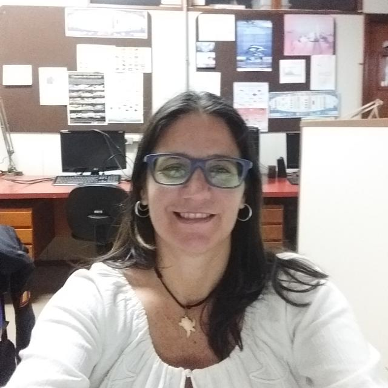

Maria de Los A. Rondon-Medicci
Venezuelana. Há 5 anos que moro no Brasil. Um dos meus objetivos é ser uma boa programadora. Sempre gosto de aprender coisas novas.
Estou muito interessada na área de Programação, usando diferentes sotfware
e linguagens. Atualmente estou me formanado na área de Front-end e Back-end.
Gosto de trabalhar em equipe e ajudar meus colegas
Estudos
- Graduação em Biologia. ULA - Venezuela
- Mestrado em Gestão e Conservação de Vida Silvestre. ICOMVIS-UNA - Costa Rica
- Doutorado em andamento em PPG Oceanografia Biológica. FURG - Brasil (em curso)
Outros
- Introduçaõ ao Geoprocessamento com Terraview 5 / QGIS 3
- Introduçaõ à Linguagem de Programação R
- Ecologia Aplicada no Programa R
- I Curso Avanzado de Sistema de Información Geográfica
- Capacitação e Desenvolvimento Académico